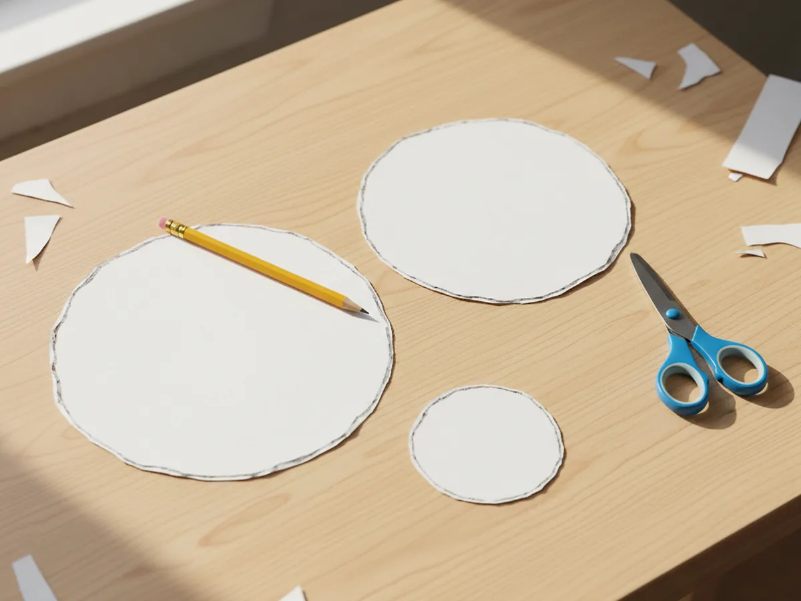
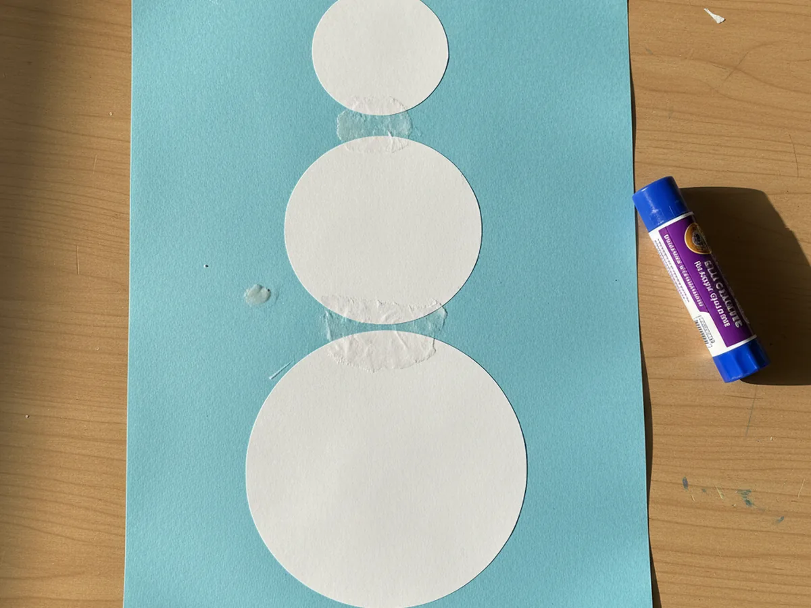
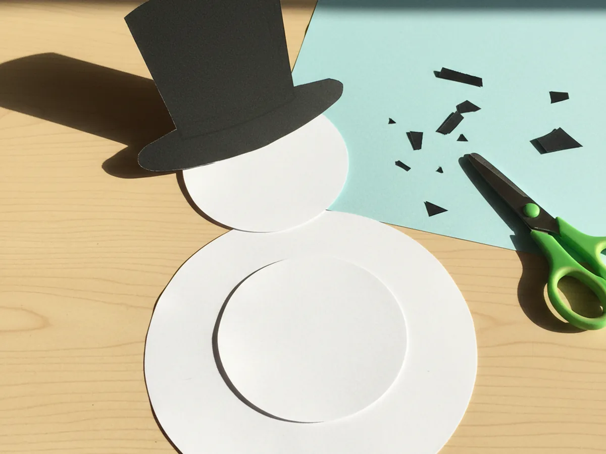
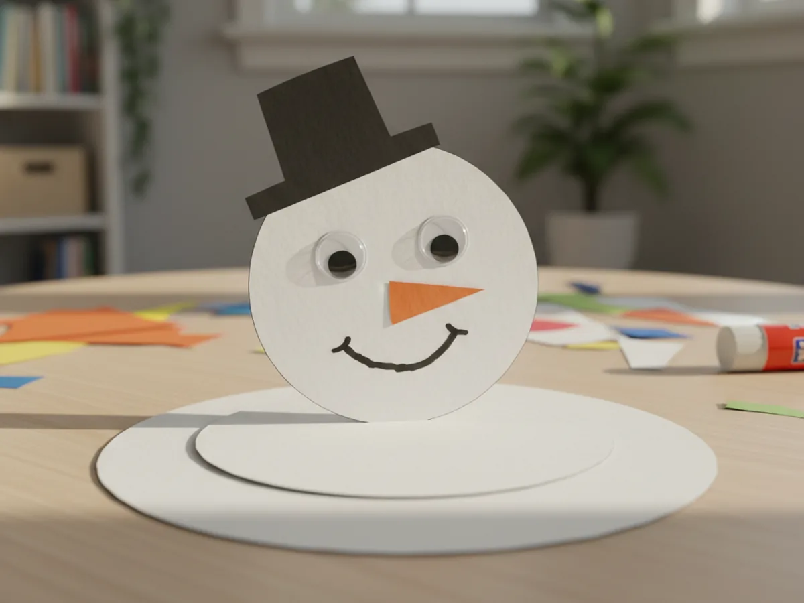
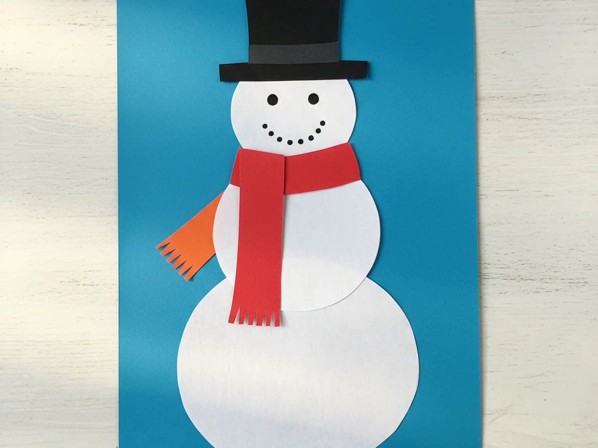
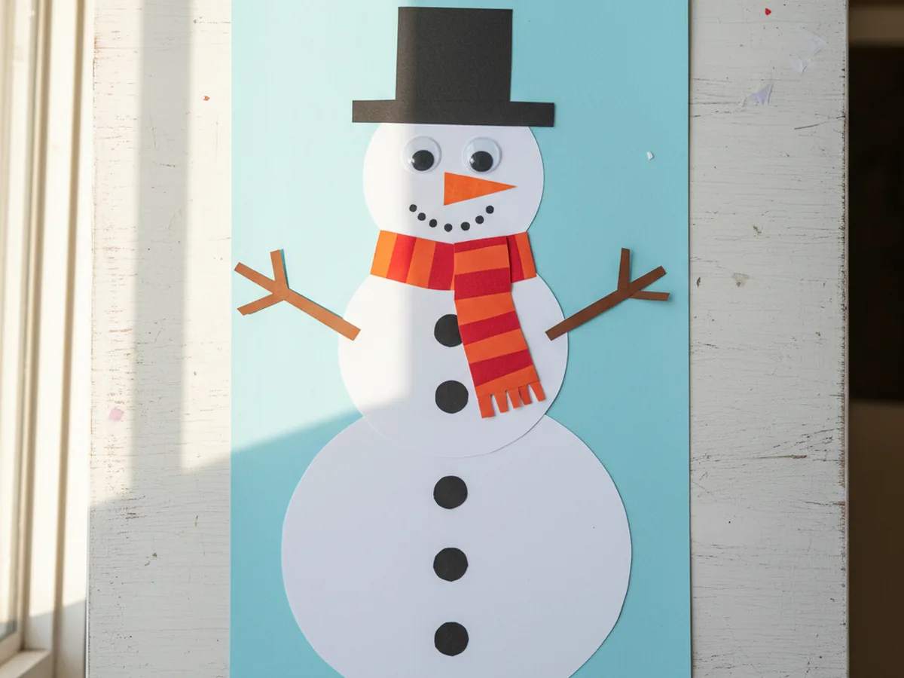

Published on April 11, 2026

A snowman paper craft is one of those winter activities that checks every box: simple supplies, low mess, and a finished result that looks genuinely sweet on the fridge. All you need is some white cardstock, a few sheets of colored construction paper, scissors, and a glue stick, and you and your child can build your very own paper snowman in about 25 minutes. ❄️
What makes this project so great for young children is that every single step is manageable. There is no paint to wait for, no glitter to clean up, and no complicated folding. You cut, you stack, you decorate. The whole activity flows naturally from one step to the next, and kids can stay engaged from beginning to end without getting frustrated.
Whether you make it as a cozy indoor activity on a cold day, a little seasonal craft to hang on the wall, or a fun way to get into the winter spirit, this snowman paper craft is simple, warm, and genuinely satisfying to make together.
Snowmen are one of the most universally beloved characters for young children. The round shapes, the carrot nose, the little hat, it all feels familiar and exciting at the same time. Making a snowman paper craft gives kids the thrill of building something they already love, using nothing but their own two hands.
Cutting the circles builds fine motor skills in a way that feels fun rather than like practice. Choosing the scarf color, picking the hat shape, and placing the buttons exactly where they want them all give children real ownership over their creation. No two snowmen ever look the same, and that is part of what makes the end result so special. When they see the finished paper snowman come together, that little burst of pride is completely genuine. ⛄
For younger toddlers, you can pre-cut the circles so they can focus entirely on the gluing and decorating. For older kids ages 5 and up, they can handle the full project from start to finish, which builds real confidence and independence at the craft table.
Here is everything you need to make this snowman paper craft at home.
Follow these steps at whatever pace feels right. Young helpers can jump in on every part, and the craft is forgiving enough that nothing needs to be perfect.
Use a pencil to trace three circles onto white cardstock. Make a large circle about 5 inches across for the body, a medium circle about 3.5 inches for the midsection, and a small circle about 2.5 inches for the head. You can use a cup, bowl, or lid as a guide to get a rounder shape. Cut them out carefully. They do not need to be perfectly round. A slightly uneven edge actually gives the snowman paper craft a charming, handmade feel that kids love.

Lay out a sheet of light blue or dark blue construction paper as your background. Place the large white circle near the bottom, the medium circle on top slightly overlapping it, and the small circle at the very top for the head. Once the placement looks right, apply a dot of glue between each circle where they overlap and press firmly. Hold each joint for a few seconds until the glue grabs. Your snowman paper craft now has its classic stacked body shape.

Cut a rectangle about 2 inches wide and 2 inches tall from black construction paper. This is the hat body. Then cut a wider strip, about 3.5 inches long and half an inch tall, for the hat brim. Glue the brim strip to the bottom edge of the rectangle so it extends slightly on both sides. Once the hat is assembled, apply glue to the back and press it onto the top of the snowman's small head circle, centered and slightly tilted if you like. A small tilt gives the snowman a playful personality.

Press two googly eyes onto the small head circle, side by side near the center. Cut a small triangle from orange construction paper for the carrot nose and glue it between and below the eyes. Use a black marker to draw a curved smile below the nose. You can also add two small rosy cheeks using a pink or red marker, or cut tiny pink circles from paper and glue them on. The face is the most fun step for little kids, so let them decide where everything goes. 🎨

Choose a bright color from your construction paper pack. Cut one strip about 5 inches long and about half an inch wide, and one shorter strip about 2 inches long of the same or a contrasting color. Glue the long strip across the neck area between the head and middle circles, letting it drape over both sides. Attach the shorter strip to one end of the long strip to look like a scarf tail hanging down. You can cut small fringe at the ends of both strips for an extra cozy detail.

Cut two thin brown paper strips, about 3 inches long each, for the stick arms. Glue one to each side of the middle circle, angling them slightly upward so the snowman looks cheerful and welcoming. Cut three small black paper circles or use black marker dots to add buttons down the center of the large body circle. Give your snowman one final look and add any extra details your child wants, like a small paper bow, a tiny paper flower, or even a paper bird perched on one arm. Your snowman paper craft is complete and ready to display. ❄️

Glitter Snowman: Let your child brush a thin layer of glue over the white circles and sprinkle silver or white glitter on top before assembling. The sparkle gives the snowman paper craft a magical, frosty look that kids absolutely adore. Place newspaper underneath to make the cleanup easy.
Toddler Finger Print Snowman: Instead of cutting circles, dip your toddler's fingers or palm in white paint and make three circular stamp clusters on blue paper. Add a marker face and paper hat once dry. It is the quickest version of this craft and creates the sweetest keepsake for little ones under age 3.
Family Snowman Scene: Make three or four snowmen in different sizes to represent each family member, then arrange them side by side on one large sheet of blue paper. Add cotton ball snow at the bottom and draw a few snowflakes with white crayon for a sweet winter scene your family can display together.
This snowman paper craft is everything a good family activity should be: easy to set up, fun from the very first cut, and finished with a result you actually want to keep. The whole project takes about 25 minutes and leaves virtually no mess behind.
Whether winter has arrived where you live or you just want to bring a little cozy, snowy magic indoors, building a paper snowman with your child is a genuinely sweet way to spend a morning or afternoon. Give it a try and enjoy every cheerful moment together.
If your child loved this snowman paper craft, these other winter paper projects are a perfect match.
Happy crafting, and enjoy every sweet winter moment with your little one.